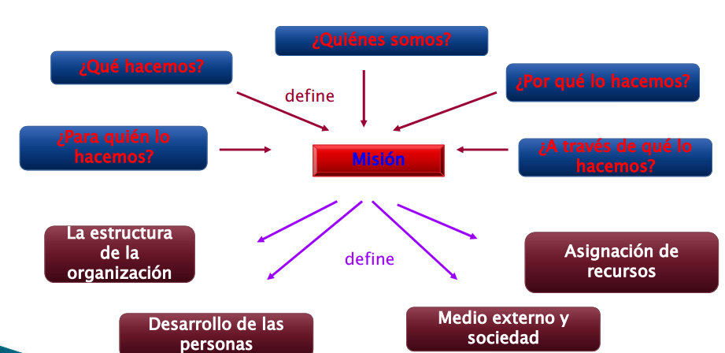

Herramientas para alinear los sistemas
La misión y estrategia de la organización
Estructura y procedimiento administrativo
Las prácticas de la administración de recursos humanos
Pasos para lograr una imagen deseada
Imagen Deseada
Analizar
Planear
